Details
Many parts make a whole. Take a look at the mechanical, electrical, and coding of this project.
Overview
We integrated a mechanical belt gantry with a digital LCD user control. The mechanical component of the project involved designing and creating various mounts, platforms, and mechanisms that enable both linear and pan movement. The electrical components of the project involved the wiring for two motors, a camera trigger, the touch screen, and the wiring for the camera trigger. The code section has three subsections; the UI section encompasses the code that went into creating the touch screen interface, the motors section includes code and libraries to run the motors, and the camera control section details the simple yet important code used to trigger the camera. Head over to our github repository to see the full source code for this project.
Mechanical
The main structure of our camera rail is made up of 2 8020 15 series rails that are each 5 feet long. We chose to use these rails because there was some excess stock in the PIE room that we were given. The advantage of using 8020 is that we could use it for both the structure of camera slider and it could be used as the rails for our camera to slide on. With many alternatives such as polished rods, we would need something to act as structural stability and a different object to act as the rails for the slider. The 8020 is also 1.5 inches thick making it very strong and resilient to bending. We used 3 aluminum brackets that were plasma cut to space the 2 8020 rails 3 inches away from each other.
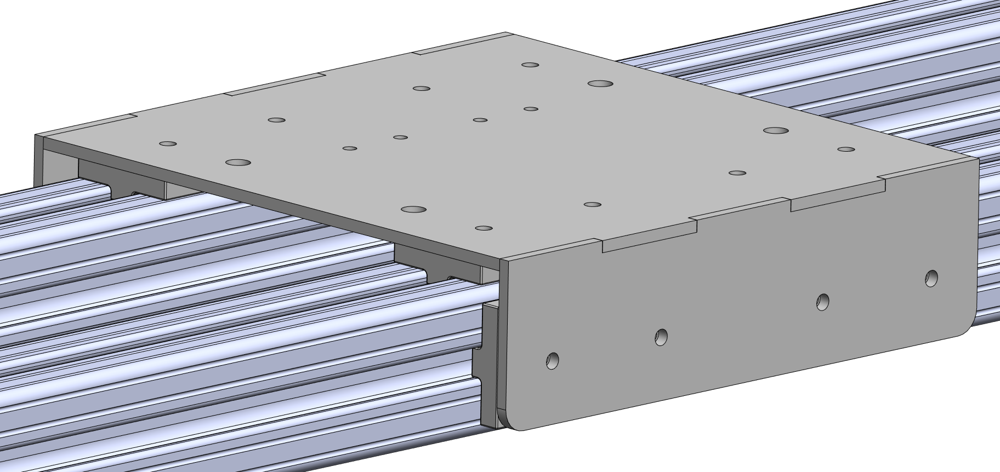To move our camera back and forth along these rails, we created a carriage that uses McMaster Carr low friction 8020 sliders and laser cut MDF. To move the carriage, we decided to use a belt mechanism since it was inexpensive and worked great for long lengths of travel like what we have. We created the following motor mount to attach the motor to one end of the rails. One of the nice things about this motor mount is it attaches to both the inside edge of the 8020 rails and the top of the 8020 rails preventing it from rotating causing the belt to get loose or tight.
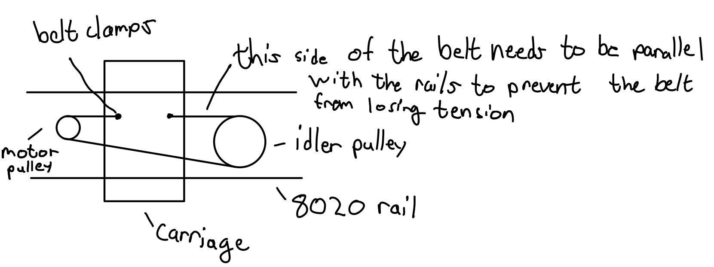On the other end of the rails is an idler pulley. To make the idler pulley, we 3D printed a ring that would be pressed on a bearing. The ring has a groove in it to prevent the belt from falling off the pulley. Since the diameter of the idler pulley is larger than the diameter of the pulley on the motor, we offset the location of the idler pulley from the center between the rails so the side of the belt that mounts to the carriage is parallel with the 8020 rails. This prevents the belt from losing tension. We've included an exaggerated sketch. 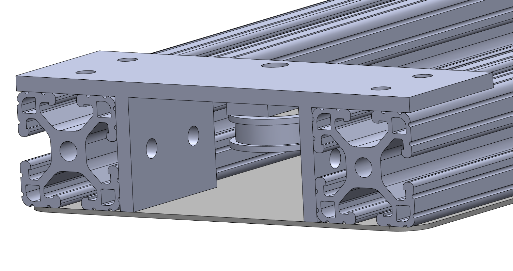Finally, to attach the belt to the carriage, we used a 3D printed piece that loops the belt and clamps the teeth of the belt together. This allows us to easily remove the belt to tune the mechanism, and re-tension the belt if needed. The clamps and the belt all run underneath the carriage so they will not get caught on the camera mounting solution above the carriage. Here’s an underside view of the carriage with the belt clamps.
One of the problems with the carriage is there is a 3 inch gap where it is not supported. If the center of the carriage flexes, that could cause the camera to shake leading to unstable shots. Since we are using thin MDF, if a heavy camera is mounted on this carriage, it could easily flex. 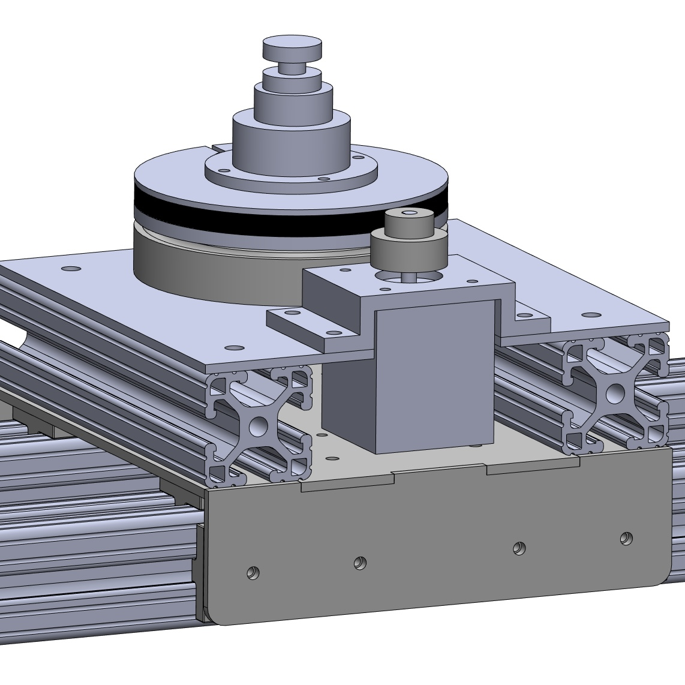To fix this, we added 2 8020 crossbeams to brace the carriage. These also happened to be great mount points for a camera mounting mechanism. For our pan mechanism, we needed the carriage to be very stable. We also had some extra belt and pulleys so we figured we could actuate the pan mechanism using the belt and pulley. Finally, we decided on using the same motor as our linear motion that way we only had one type of motor on our system. We created a turret mechanism that uses 2 3D printed pieces that are held together. On both of the pieces, there is a race for ball bearings to sit in supporting lateral loads placed on the turret. 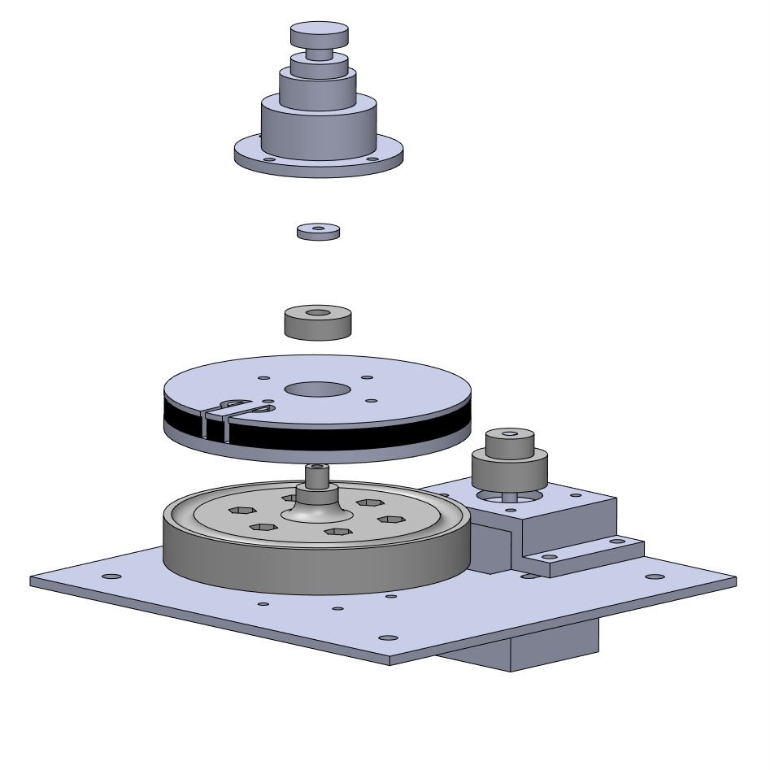 The bottom piece has a shaft that sticks out the top of it which a radial bearing pressed into the top piece goes onto to support axial loads placed on the turret. The top piece has belt teeth formed into it and the same clamp mechanism as the one we are using on the carriage to hold the belt in place. A mount piece attaches to the top piece of the turret where the head of a tripod camera can attach (the head is not pictured in CAD). 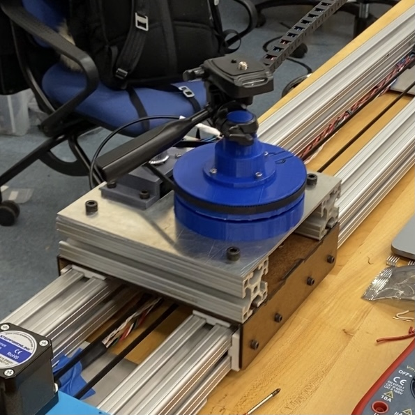 We attached the turret to a plasma cut plate of aluminum and created a 3D printed mount to attach the motor at the proper height so the motor would not interfere with the carriage when this plate is mounted on the 8020 rails on the carriage.
We used drag chain to send wires to the carriage to power the pan motor, send a remote trigger to the camera, and receive a signal from a limit switch to know the location of the turret. We also added limit switches on the pan mechanism and the linear motion so that we could home the actuators. These switches were hot glued in place and the pan switch was mounted on a small 3D printed cube. Finally, we created some 3D printed pieces and laser cut pieces to mount all the electronics at one end of the slider.
Electrical
The touchscreen is wired based on the wiring tutorial provided by Adafruit for this screen. We are using an Arduino Mega for the final deliverable, but also prototyped on an Arduino Uno. The CLK through D/C connections are for the screen, while the SDA and SCL connections allow the capacitive touch to work. In order, each connections is the following:
- GND connects to ground.
- Vin connects to 5V. 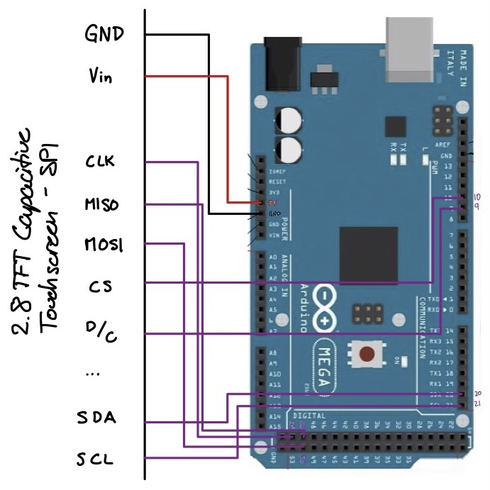
- CLK connects to the SPI clock, which is Digital 52 on the Mega.
- MISO connects to the SPI MISO, Digital 50 on the Mega.
- MOSI connects to the SPI MOSI, Digital 51 on Mega.
- CS connects to the SPI Chip Select Pin. This can be any pin, but we are using Digital 10.
- D/C connects to the SPI data/command select pin. Once again this can be any pin, but we are using Digital 9.
- SCL connects to the I2C clock SCL pin, Digital 21 on the Mega.
- SDA connects to the I2C data SDA pin, Digital 20 on the Mega.
Note that we also needed to solder closed the IM1, IM2, and IM3 pins on the back of our touchscreen board in order to trigger the SPI side of the board; if you have the same board that we do you’ll need to do that as well.
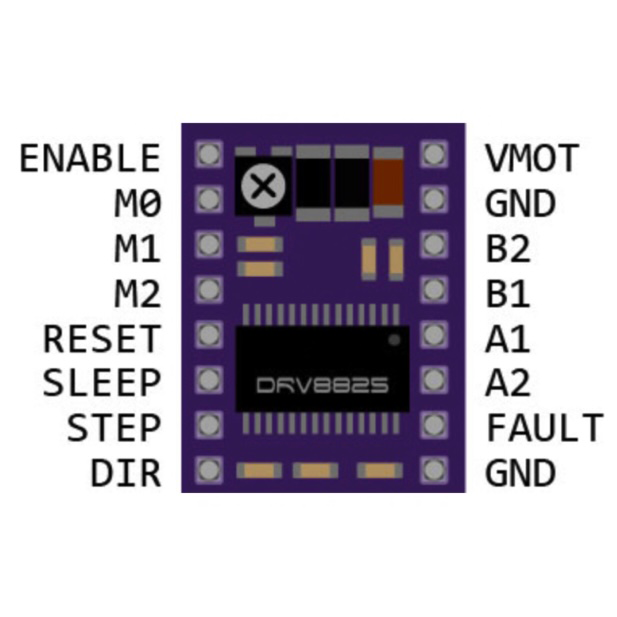The motor driver’s pinout is shown here. The VMOT and GND lines in the upper right corner are connected to the higher voltage lines to supply the motor with enough power to run. The B2-A2 pins supply power to the electromagnets in the motor. The second GND pin (lower right corner) is with reference to the voltage for the pins on the opposite side of the board, which in our case use voltages from the Arduino. The Sleep and Reset pins are held high so the motor does not go into low-power Sleep mode, or Reset the circuitry inside. Both of these pins are active low. The M0-M2 pins control the motor’s step size. The three pins work in a simple binary state encoding to switch from full steps (all pins low) to 1/32 steps (M0 in any state and M1 and M2 high) in powers of two. As shown in the diagram below, we held M0 and M1 high for a 1/8 step size.
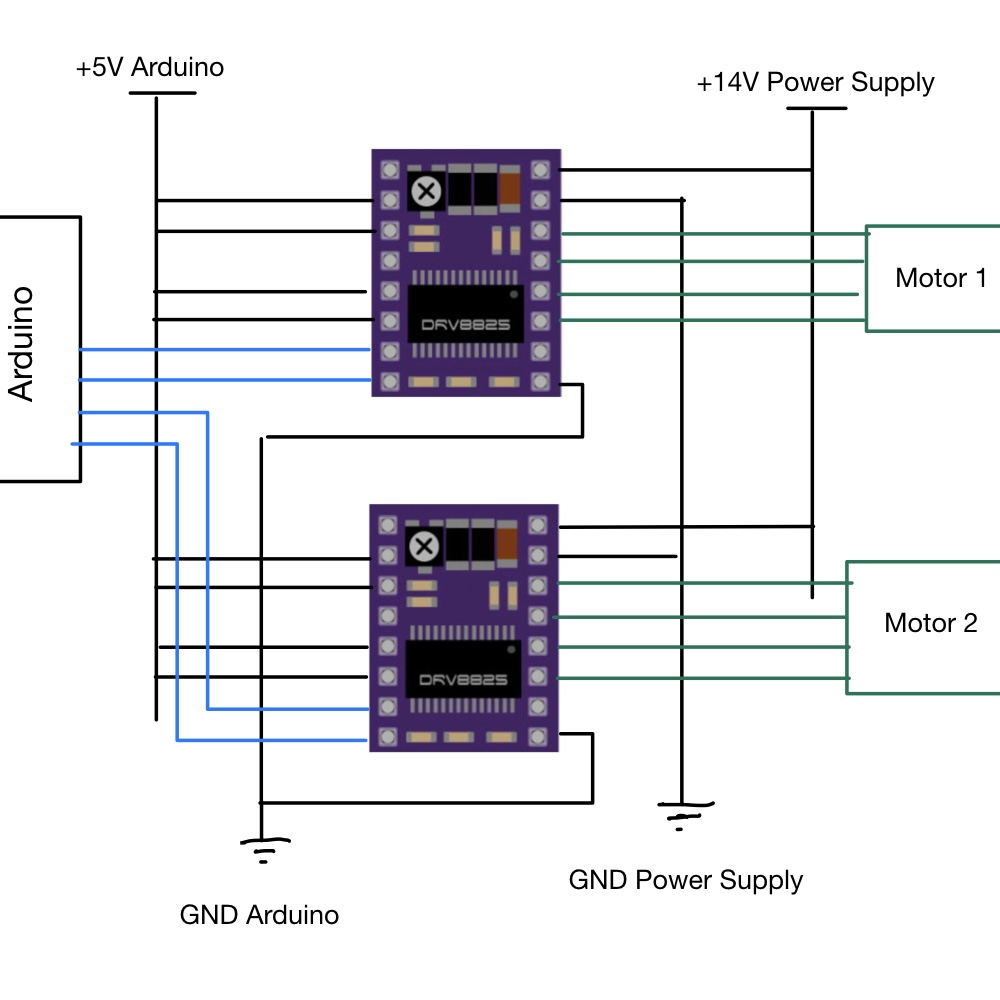To protect the motor drivers from high current, the potentiometer (marked with an “x” in the top left corner) was adjusted so that the voltage between the logic high voltage to the motors (in our case 14 V) to the ground to the low voltage power supply (the Arduino) was roughly 500 mV. This operation was executed by wiring the driver only to Reset, Step, VMOT, GND_14V, and GND_Arduino. A multimeter measured the voltage between the center of the potentiometer and GND_Arduino, which was roughly 500mV ± 50mV. This specific value was chosen because of guidance in documentation for the motor drivers that the current limit was roughly equal to 2 * V_ref, where V_ref is the voltage measured earlier. Given that the desired current limit was one amp, 1A = 2*V_ref, so V_ref = 0.5V = 500mV. Before this adjustment was made, drivers would overheat quickly when plugged into the motors.
After the end of sprint 3 and before integration with the UI began, the last of the drivers stopped functioning as expected. We were forced to pivot to a new motor driver, the A4988, with a nearly identical pinout and function. Thankfully almost no rewiring was necessary apart from the addition of a Vdd pin on the A4988 that sets the logic high voltage it should expect for the various inputs.
After wiring the new drivers in parallel and flashing double motor control to the Arduino (after some light debugging), both motors drove at the same time and as expected. More detail on the changes made during integration is available in the code section, but one additional electrical connection made was from the Arduino to the sleep pins of the drivers.
This connection allows the Arduino to put the motors to sleep when they are not in use. They can be separated from the constant current available from the power supply to prevent overheating, but the power supply can be kept plugged in so the display is constantly on. The Arduino was also wired in parallel to the drivers so that a computer does not need to be connected for the slider to work.
Coding
User Interface
When it comes to controlling the interface we worked our way up in complexity in each sprint, going from a 16x2 LCD to a 64x128 LCD and finally producing a 2.8” capacitive touchscreen with four different pages to control the camera slider. While a touchscreen interface is a bit complex for our uses, we decided to create a touchscreen in order to further our own learning on the subject. For someone recreating this project a simpler screen is likely to be sufficient.
The interface contains five pages; the startup page, two settings pages, the running/e-stop page, and the stopped/home page. We tried to use minimal pages to simplify the user experience but still enough that we could display information in a large format (e.g. large, easy to press stop and home buttons) and that there was some flow to the interface. 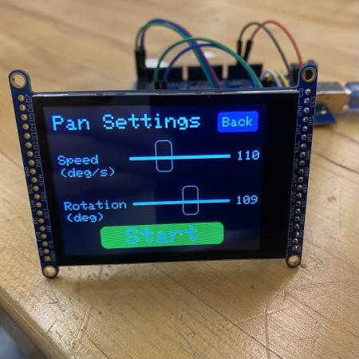The screen we chose uses five libraries, Adafruit_ILI9341 for the display, Adafruit_FT6206 for the screen, Adafruit_GFX for graphics primitives (lines, circles, rectangles), and SPI to set up a master (Arduino) - slave (touchscreen) communication line to send data. Using these libraries our code switches through states in response to a touch on the screen (ctp.touched()). The screen initializes on the startup page, then when touched (anywhere on screen), switches to the linear settings page, which loads the sliders and a button to move to the pan settings page. The sliders translate in response to “touch and drag” motion. The pan page has two buttons; as small back button to toggle between the linear and pan settings pages and a large start button. When the screen is touched within the boundaries of the start button it switches to the running page and initializes motor motion. The running page has an emergency-stop button, which when pressed (or after motor motion is complete) switches to the stop screen. The final stop page has a “home” button which reinitializes the slider (sends it to home and it’s limit switch) and loops back to the settings page, allowing users to move through the settings-running-stop states once more.
The main design decisions we made with the interface were a) to use sliders to set the speeds and distances, and b) the size and placement of different buttons. Our decision to use sliders was made because we realized that quick adjustments were more important than precise value setting. The slider we coded can be set anywhere across its range in seconds, allowing for many different shots to be made quickly. Another design decision we encountered was the issue of an emergency stop button. We originally thought to create an external e-stop, but we decided to incorporate it into the screen instead since that allowed us to a) make the button large and easy to press without having to purchase a large or custom button, and b) keep the e-stop button in the same place as other settings and buttons, since we believe that is where the user is most likely to look for the emergency stop.
To take a closer look at the UI code, check out our github repository.
Motors
Stepper motors are very commonly used in gantry systems where accuracy is needed. Given servo motors’ limited travel and DC motors’ lack of accuracy, stepper motors were the obvious choice. Stepper drivers are commonly used as an interface between a controller unit and a stepper motor. In this configuration, the Arduino only needs to output a step logic and a direction logic, which greatly simplifies the control code.
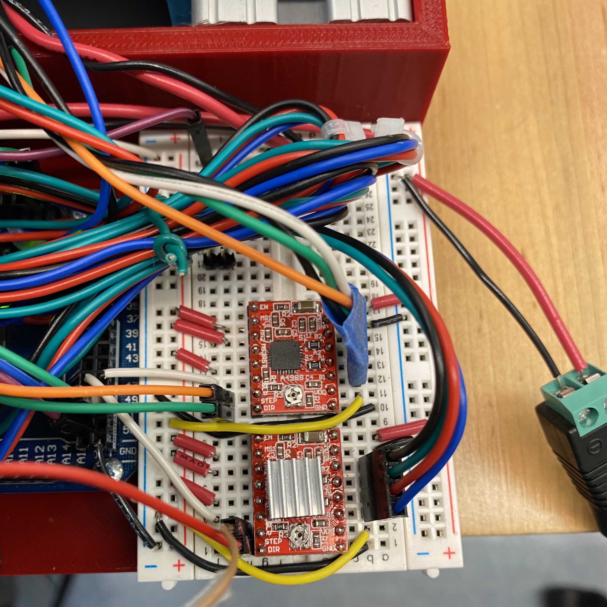The stepper driver takes a square wave step input and a held directional input to instruct the motors. For early iterations of this project, the square wave was generated in the firmware by writing the step pin high, waiting for between 0.5 ms and 2 ms, writing the pin low, waiting for the same interval, and repeating again. This simple square wave generator creates the desired behavior, but the stepper motor lacks the torque to accelerate the weighted payload up to speed. In the second sprint, the motor code was augmented to run the motor out to positions along the 1.2 meter range of motion, but it still was using the simple square wave mechanism and generating too much audible noise.
To respond to the noise and difficulty getting the motor moving, the motor control was shifted to the Speedy Stepper library, created by Olin’s very own Stan Reifel. This library has built-in acceleration schema and many more customization options, which the final iteration of the motor control took advantage of. The library allowed for homing using limit switches, and also for the implementation of microstepping.
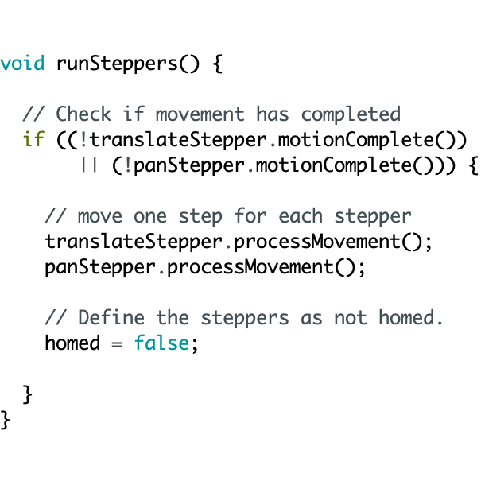The library allows for the control of multiple steppers at the same time through the use of setupMove commands. These functions prepare the stepper for movement, after which a function processMovement can be executed to process one small piece of that motion. Placing the processMovement call inside a while loop that checks whether the moves that have been setup have been completed allows the code to run multiple motors at the same time.
Unfortunately, a while loop was not possible when integrating with the UI. The screen functions as a finite state machine, using various function calls to switch to the next state when various on-screen buttons are pressed. Creating a new state that processes the movement and does not change the state until a button press is detected, or until the movement is complete, involved converting the while architecture to an if architecture.
Take a look at the first time our slider fully functioned in the video below! To take a closer look at the motor control code, check out our github repository.
Camera
Triggering the shutter on the camera is a fairly simple task complicated by the fact that we don’t want to send power from one electronic device to another, especially when one is a $2000 camera. This means we can’t simply wire up a digital out to the camera’s remote shutter port without adding in something to separate the two devices so power never flows between them. A relay designed for arduino would probably work in this situation as it allows for one circuit to control the state of another without power transfer, but as they are designed to control high power circuits with low power logic, they are overkill for the application of controlling a logic circuit with a logic circuit. Instead, we opted to use a much smaller and cheaper optocoupler for our purposes. An optocoupler is similar to a relay, but can only be used for low power applications like logic circuits on both sides. In an optocoupler, the control signal (the arduino) is connected to an enclosed LED which when lit up causes the phototransistor on the output side of the optocoupler to become conductive and complete the output logic circuit (the camera).
For software this means all we need to do is send a high signal from the digital out of the arduino and it will trigger the camera shutter with no risk of damaging either device.